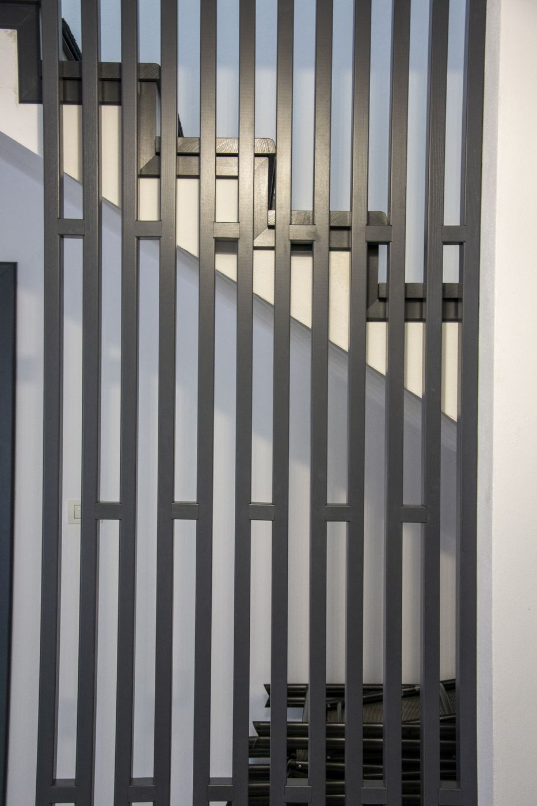
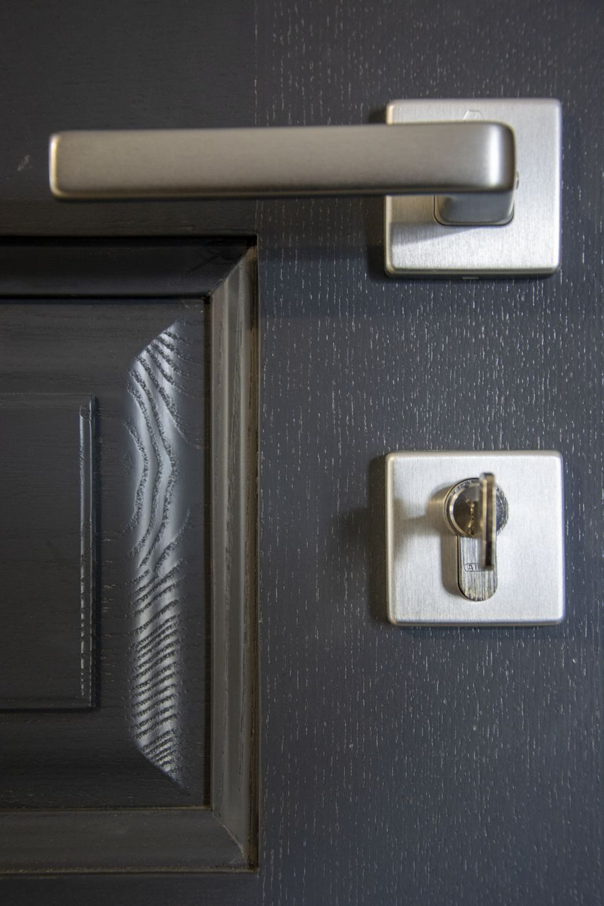

Riflaje și lamele decorative
Balustrade, separatoare de spațiu și placări cu lamele tăiate identic.
Atelierul BALU
Un atelier de tâmplărie din satul Padeș, județul Gorj, unde lucrează împreună meșteri, designeri și utilaje CNC.
Povestea
Totul a pornit de la o meserie: tâmplăria făcută cu răbdare, piesă cu piesă.
În 16 ani, atelierul a crescut într-o echipă care acoperă tot drumul unei lucrări, de la prima discuție și proiectul 3D până la montajul în casa clientului. Meșteșugul a rămas același; s-au adăugat proiectarea digitală, randările și utilajele CNC, care aduc precizie acolo unde contează.
Text exemplu: povestea reală a atelierului (cum a început, anul înființării, oamenii) se completează aici.
Echipa
Fiecare lucrare trece prin aceleași mâini, de la proiect la montaj.
Peste 16 ani de experiență în scări, uși și mobilier din lemn. Fiecare îmbinare și fiecare finisaj trec prin mâinile lor.
Proiectează fiecare spațiu în 3D și pregătesc randările pentru aprobare, în colaborare cu arhitecți și designeri de interior.
Utilaje care taie și frezează lemnul exact după proiect, pentru detalii complexe și piese repetabile.
Livrează și montează piesele în România, Germania și în restul Uniunii Europene.
Proiectare 3D
Designerii BALU modelează fiecare piesă în spațiul ei real. Execuția pornește doar după aprobarea randărilor.
Spațiul se măsoară la fața locului sau după fotografii și dimensiuni primite.
Piesa este desenată în spațiul ei real, cu toate dimensiunile și îmbinările.
Variante de esență și finisaj, prezentate în imagini apropiate de realitate.
După aprobare, proiectul merge direct în atelier, la meșteri și pe CNC.
Execuție după planuri, desene tehnice și specificații, cu comunicare directă între proiectant și meșteri.
Atelier CNC
Utilajele CNC taie și frezează lemnul exact după fișierul de proiect, pentru clienți privați, arhitecți și firme.

Balustrade, separatoare de spațiu și placări cu lamele tăiate identic.

Uși, fronturi de mobilier și panouri cu profile frezate după desen.

Stâlpi, trepte și mâini curente cu profile precise.

Îmbinări aparente pentru mese și mobilier, executate cu precizie.
Litere, logo-uri și panouri decorative pentru case, birouri și spații comerciale.
Elemente unicat sau serii mici, după fișierul arhitectului ori al designerului.
Din atelier
Toate filmările din atelier, de la lemnul brut la montaj.
Meșterii, designerii și atelierul CNC pornesc de la aceeași cerere de ofertă, în trei pași.